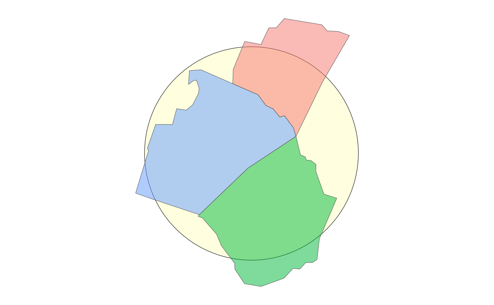

Create a circle or square that can be used as a frame around a simple feature object using fixed aesthetics for fill, color, size, and linetype. This function is helpful for the background of an inset map intended for use with layer_inset.
Usage
layer_frame(
data = NULL,
dist = NULL,
diag_ratio = NULL,
unit = "meter",
asp = NULL,
style = "circle",
scale = 1,
rotate = 0,
inscribed = FALSE,
color = "black",
size = 1,
linetype = "solid",
fill = "white",
neatline = TRUE,
expand = TRUE,
basemap = FALSE,
union = TRUE,
by_feature = FALSE,
...
)
make_frame(
x,
dist = NULL,
diag_ratio = NULL,
unit = "meter",
asp = NULL,
style = "circle",
scale = 1,
rotate = 0,
inscribed = FALSE,
dTolerance = 0,
union = TRUE,
by_feature = FALSE
)Arguments
- data, x
A
sf,sfc, orbboxobject to create the frame around.- dist
buffer distance in units. Optional.
- diag_ratio
ratio of diagonal distance of area's bounding box used as buffer distance. e.g. if the diagonal distance is 3000 meters and the "diag_ratio = 0.1" a 300 meter will be used. Ignored when
distis provided.- unit
Units for buffer. Supported options include "meter", "foot", "kilometer", and "mile", "nautical mile" Common abbreviations (e.g. "km" instead of "kilometer") are also supported. Distance in units is converted to units matching GDAL units for x; defaults to "meter"
- asp
Aspect ratio of width to height as a numeric value (e.g. 0.33) or character (e.g. "1:3"). If numeric,
get_asp()returns the same value without modification.- style
Style of framing shape to add, "circle", "square", "rect", "buffer", or "none". If style is "buffer", the asp parameter is ignored. If style is "none", the dist, diag_ratio, and asp parameters are ignored and the input data is used as the frame.
- scale
numeric; scale factor, Default: 1
- rotate
numeric; degrees to rotate (-360 to 360), Default: 0
- inscribed
If
TRUE, make circle, square, or donut inscribed within x, ifFALSE, make it circumscribed. Use- fill, color, size, linetype
Fixed aesthetics for frame, passed to layer_location_data.
- neatline
If
TRUE, return a list of layers that includes a layer_neatline- expand
If
TRUE, the default, adds a small expansion factor to the limits to ensure that data and axes don't overlap. IfFALSE, limits are taken exactly from the data orxlim/ylim.- basemap
Either a logical vector or ggplot object.
If logical and
TRUE, add x toggplot2::ggplot(). IfFALSE, return x as is.If a ggplot, add x to basemap object.
If a ggproto object (or list that contains a ggproto object), add x and basemap object to
ggplot2::ggplot().- union
If
TRUE, pass data to sf::st_union before buffering and creating frame; defaults toTRUE.- by_feature
If
TRUE, create a frame around each feature. IfFALSE(default), union the provided features before creating a frame.- ...
Arguments passed on to
layer_location_datalayer_fnggplot2 geom or custom function using lambda syntax. Use for passing custom mapping functions to layer_location_data beyond the supported geom options.
label_colColumn name or id for a column with the text or labels to pass to any text geom.
smooth_paramsOptional. Logical or a list of parameters passed to
smoothr::smooth(). IfTRUE, applysmoothr::smooth()to location data using default parameters. smooth_params is ignored if data isNULL(inheriting data from ggplot).shadow_paramsOptional. Logical or a list of parameters passed to
ggfx::with_shadow(). IfTRUE, applyggfx::with_shadow()to the layer using default parameters. shadow_params is ignored if layer_fn is provided.locationsf object. If multiple areas are provided, they are unioned into a single sf object using sf::st_union
filetypeFile type to use if passing parameters to sfext::read_sf_download or sfext::read_sf_pkg (required for extdata and cached data).
fnFunction to apply to data after filtering by location but before returning from function.
cropIf
TRUE, x is cropped to y usingsf::st_crop().trimIf
TRUE, x is trimmed to y withst_trim().crsCoordinate reference system to return.
mappingSet of aesthetic mappings created by
aes()oraes_(). If specified andinherit.aes = TRUE(the default), it is combined with the default mapping at the top level of the plot. You must supplymappingif there is no plot mapping.
- dTolerance
numeric; tolerance parameter, specified for all or for each feature geometry. If you run
st_simplify, the input data is specified with long-lat coordinates andsf_use_s2()returnsTRUE, then the value ofdTolerancemust be specified in meters.
Details
The make_frame helper function calls sfext::st_circle (if style = "circle"), sfext::st_square (if style = "square"), sfext::st_bbox_ext
(if style = "rect"), or sfext::st_buffer_ext (if style = "none").
If neatline is TRUE, layer_frame returns a list of two geoms, the second
a layer_neatline layer created using the frame object as the data and the
parameters bgcolor = "none" and color = "none". asp is set to 1 if style is
"circle" or "square" or the provided asp value otherwise.
Additional parameters passed through ... can include additional fixed aesthetics (e.g. alpha). If using the fn parameter, the function is applied to the frame simple feature object created by make_frame (not to the original input data).
See also
Other layer:
layer_location_data(),
layer_neatline(),
layer_scaled()
Examples
nc <- sfext::read_sf_path(system.file("shape/nc.shp", package = "sf"))
raleigh_msa <-
getdata::get_location(
type = nc,
name_col = "NAME",
name = c("Franklin", "Johnston", "Wake"),
crs = 3857
)
ggplot() +
layer_frame(
data = raleigh_msa,
frame = "circle",
fill = "lightyellow",
inscribed = FALSE
) +
layer_location_data(
data = raleigh_msa,
mapping = aes(fill = NAME),
alpha = 0.5
) +
ggplot2::guides(
fill = "none"
)
#> Warning: Ignoring unknown parameters: frame
